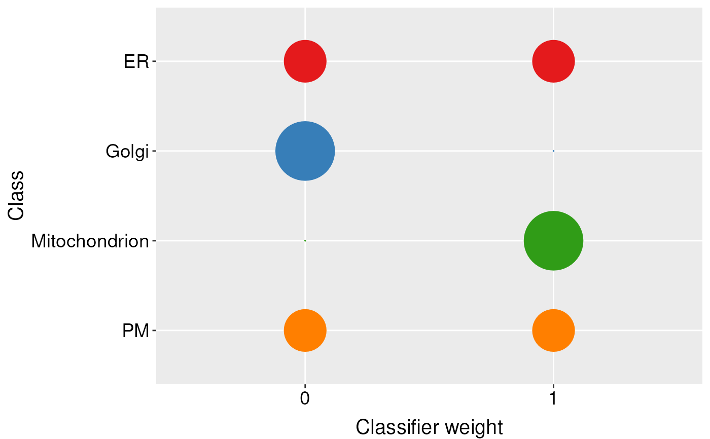

R/machinelearning-functions-knntl.R
knntlClassification.RdClassification using a variation of the KNN implementation of Wu and Dietterich's transfer learning schema
knntlClassification(primary, auxiliary, fcol = "markers", bestTheta, k,
scores = c("prediction", "all", "none"), seed)An instance of class "MSnSet".
An instance of class
"MSnSet".
The feature meta-data containing marker definitions.
Default is markers.
Best theta vector as output from
knntlOptimisation, see knntlOptimisation for
details
Numeric vector of length 2, containing the best k
parameters to use for the primary and auxiliary datasets. If k
k is not specified it will be calculated internally.
One of "prediction", "all" or
"none" to report the score for the predicted class
only, for all classes or none.
The optional random number generator seed.
A character vector of the classifications for the unknowns
# \donttest{
library(pRolocdata)
data(andy2011)
data(andy2011goCC)
## reducing calculation time of k by pre-running knnOptimisation
x <- c(andy2011, andy2011goCC)
k <- lapply(x, function(z)
knnOptimisation(z, times=5,
fcol = "markers.orig",
verbose = FALSE))
k <- sapply(k, function(z) getParams(z))
k
#> k k
#> 7 3
## reducing parameter search with theta = 1,
## weights of only 1 or 0 will be considered
opt <- knntlOptimisation(andy2011, andy2011goCC,
fcol = "markers.orig",
times = 2,
by = 1, k = k)
#> Removing 389 columns with only 0s.
#> Weigths:
#> (0, 1)
opt
#> Object of class "ThetaRegRes"
#> Algorithm: theta
#> Theta hyper-parameters:
#> weights: 0 1
#> k: 7 3
#> nrow: 16
#> Design:
#> Replication: 2 x 5-fold X-validation
#> Partitioning: 0.2/0.8 (test/train)
#> Results
#> macro F1:
#> Min. 1st Qu. Median Mean 3rd Qu. Max.
#> 0.8893 0.8919 0.8945 0.8945 0.8971 0.8998
#> best theta:
#> ER Golgi Mitochondrion PM
#> weight:0 1 2 1 2
#> weight:1 1 0 1 0
th <- getParams(opt)
plot(opt)

res <- knntlClassification(andy2011, andy2011goCC,
fcol = "markers.orig", th, k)
res
#> MSnSet (storageMode: lockedEnvironment)
#> assayData: 1371 features, 8 samples
#> element names: exprs
#> protocolData: none
#> phenoData
#> sampleNames: X113 X114 ... X121 (8 total)
#> varLabels: Fraction.information
#> varMetadata: labelDescription
#> featureData
#> featureNames: O00767 P51648 ... O75312 (1371 total)
#> fvarLabels: Accession.No. Protein.Description ... knntl (12 total)
#> fvarMetadata: labelDescription
#> experimentData: use 'experimentData(object)'
#> Annotation:
#> - - - Processing information - - -
#> Loaded on Fri Sep 23 15:43:47 2016.
#> Normalised to sum of intensities.
#> Added markers from 'mrk' marker vector. Fri Sep 23 15:43:47 2016
#> MSnbase version: 1.99.2
# }